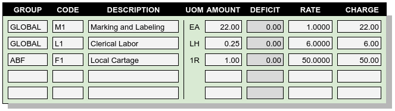
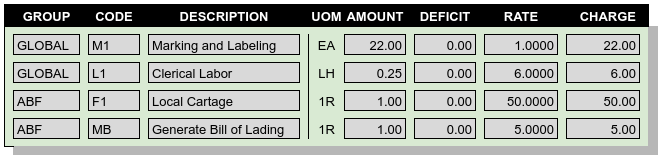
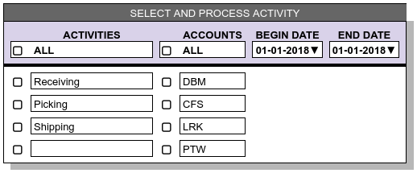
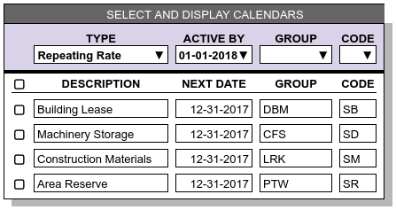
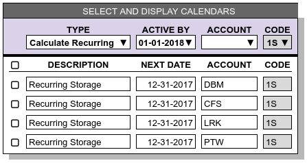

Generating or Entering Charges¶
Standard Contract Terms and Rate Quotation reports categorize business services. This topic explains how charges for those services are determined and accumulated for billing.
Most charges are applied to activities, with the exception of charges which are generated from calendar events. Charge records are keyed by a combination of the transaction identifier of the source activity, and the payer of the charge. Usually, the payer is the account associated with the activity transaction. Where a calendar event creates a charge, or where a charge is applied without an associated activity, a sequential counter supplies the charge identifier.
WARES uses five mechanisms to capture charges: clerical entry, generation from activity, generation from calendar, product calculations from activity, and product calculations from calendar.
Optional Entered Charges¶
Certain types of charges are inherently optional; these charges require a clerical entry. Here are some circumstances where optional entry is required:
- The rate or charge for an item varies and cannot be determined in advance, as with freight charges for an overpacked package.
- The occurrence of an action cannot be predicted, such as having to restack a pallet or replace a broken pallet shell.
- The quantity of an item cannot be predicted, as would happen with labor charges for performing a physical inventory.
- An event happens across many accounts, but with very low frequency, and so the rate is made Global. Global rates are always optional.
Optional charges can be entered for an activity up to the point that the transaction is completed, verified, and released to billing calculation. An example of of the charges entry page for an activity follows:
Once mandatory and calculated charges are added to an activity, editing the charges is not an option. The charge entry page shows all the charges including the mandatory code MB line, but the page becomes view-only as shown:
Note
- The deficit column is visible but entries are calculated and protected
- Quantity, Factor, Minimum, and Surcharge entries used in rate formulas are not shown
Tip
The Clerical Labor seems not to extend correctly, as the Amount times the Rate would be $1.50. But for this rate, the quantity is not per each hour, but per each Quarter-hour. See the topic on Extending Rates to Charges for details on how charges are calculated.
Generated Charges¶
The billing for an activity transaction can be hand-calculated by setting the transaction’s status, but this does not leave a batch calculation audit trail. Further, changing status by hand is not a satisfactory method for updating charges on hundreds of transactions at a time.
For all rates which are not optional, WARES uses batch methods to generate the charges. Each batch has a unique identifier, a record of the batch input, start and end datetimes, and a count of transactions processed. Also each charge record created or updated by a batch method is stamped with the batch identifier.
Batch billing routines include user controls to select or filter the records to process. In this way, the user easily manages billing for hundreds or thousands of records at a time.
Mandatory Generated Charges¶
A billing batch process selects completed activity transactions, closing them to updates and creating or updating manatory and calculated charges.
The default is to process transactions for all accounts in all activities, beginning from the start of the open period until the end of the open period, or until the current day if that is earlier.
Since billing routines prevent further updates to transactions, this global selection rule is not always desirable. WARES displays a user control to select which records from activity are ready for billing:
To process a transaction, rates are selected based on the following criteria:
- Only mandatory and calculated rates are considered in this section
- Rates must belong to the transaction’s account, or to groups not associated with an account
- Rates must reference the activity of the transaction
Before calculating billing on a transaction, the set of possible charge record identifiers is generated based on the transaction identifier and the payers specified on the selected rates. Mandatory and Calculated charge lines with these charge identifiers are then selected and deleted.
Rate calculation proceeds as follows for each mandatory rate record:
- An Amount is determined for the rate’s Per unit associated with the Activity
- If this Amount is not zero, it is used to calculate a Deficit, a Rate, and a Charge as described in Extending Rates to Charges
- Using the transaction Identifier and Payer, a charge record header is written for the transaction if none exists
- A charge line is added for the mandatory charge.
This description makes it clear that a mandatory rate creates a single charge line. Where a mandatory rate refers to something like case picking, the Per code must calculate a total for the entire transaction.
Product Calculated Charges¶
Once mandatory charges are applied to a transaction, another billing routine applies calculated charges to each line item of the transaction. Lines are read in sequence, and the product is checked to determine a rate group identifier. Then rates are selected to apply based on the criteria:
- Only Calculated rates are considered
- Rates must belong to the product’s rate group
- Rates must reference the activity of the transaction
Now for the line, rates are applied as follows for each calculated rate record:
- Using the rate’s Per unit for the Activity, an Amount is calculated for the line
- If this Amount is not zero, it is used to calculate a Deficit, a Rate, and a Charge as described above
- Using the transaction Identifier and Payer, a charge record header is written for the transaction if none exists
- A charge line is added for the calculated charge.
This sounds like the way Mandatory charges are applied, and it is. The difference is in applying rates one line at a time based on the line’s product rate group.
Repeating Calendar Charges¶
Repeating charges are applied by selecting scheduled rates from the calendar list, while calling a billing routine to apply the charges. Each calendar entry will generate one charge line item. Charges calculated from calendar events are identified by a sequential charge number and the payer id, and there is no associated activity.
An example calendar selection page for Repeating Rates follows:
The Active By calendar date defaults to the current date for selection, while the Next Date of each rate is used to update calendars during calculation. Setting the Active By date to a future date allows billing calculations based on calendars to be calculated in advance. This feature is useful when the end of a period falls on a weekend, for example.
Note that the typical Group for a repeating rate is an account identifier, and codes used may vary. In this example, the accounting implications of a building lease are different from long-term machinery storage, and so the service codes for these two rates are different.
Recurring Calculated Charges¶
For stored product, a routine calculates recurring product storage charges based on an account’s recurring calculation settings and calendar. Recurring storage charges are identified by a sequential charge number and the payer id. Each charge is associated with a single product, and the charge is linked to a recurring storage audit table which documents stock activity and balances for product and lot quantities.
The following image shows the calendar selection page for recurring Calculation:
Note that the filter allows selection by Account rather than Group, and the code 1S of associated rates is auto-filled.
See the Recurring Calculation Audits article for more information on how recurring storage charges are calculated and audited.